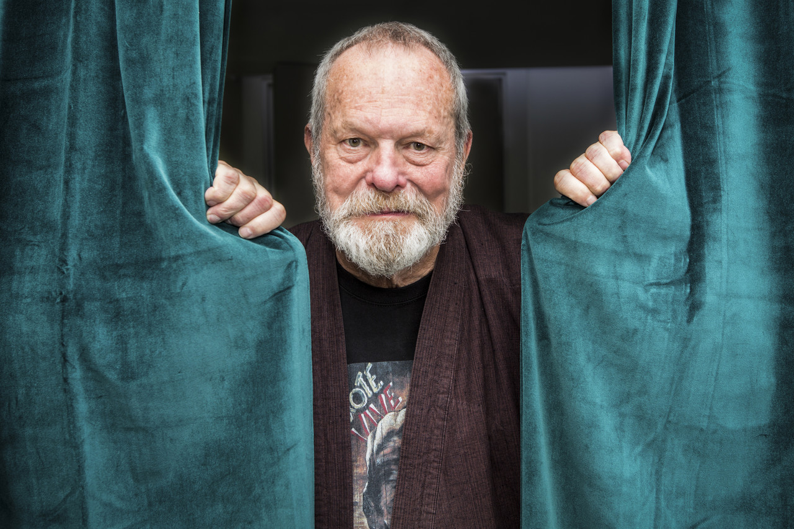

A table that lists the greatest film directors
| Director | Best Films | Worst Films | Frequent Collaborators | Trademarks |
|---|---|---|---|---|
| 1. David Lynch | Blue Velvet, Wild at Heart, Eraserhead, Twin Peaks: Fire Walk With Me | none worth mentioning--even Dune and Inland Empire have their merits | Angelo Badalamenti, Kyle MacLachlan, Laura Dern, Frederick Elmes, Peter Deming | dreamy pacing, quirky humor, atmospheric soundtracks, inventive use of pop music, surrealistic style |
| 2. Terry Gilliam | Brazil, 12 Monkeys, The Fisher King, Fear & Loathing in Las Vegas | Jabberwocky, The Brothers Grimm | Jeff Bridges, Robin Williams, Heath Ledger, Roger Pratt | Dutch camera angles, surreal style, chaotic energy, affinity for insanity, live-acton cartoon style |
| 3. Tim Burton | Edward Scissorhands, Ed Wood, Beetlejuice, Batman Returns | Alice in Wonderland, Planet of th Apes | Danny Elfman, Johnny Depp, Bo Welch, Michael Keaton, Winona Ryder, Chris Lebenzon | affinity for outsiders, childlike view of the world, operatic drama, silly humor, inventive design work |
| 4. Oliver Stone | Natural Born Killers, JFK, Platoon | Wall Street: Money Never Sleeps, The Hand, Seizure | Robert Richardson, Charlie Sheen, Michael Douglas, Val Kilmer, John Williams | brutal violence, chaotic energy, cutting edge editing techniques, hand-held camerawork, gritty style |
| 5. Matin Scorsese | Taxi Driver, Goodfellas, The Departed, Raging Bull | The Color of Money, Boxcar Bertha | Thelma Schoonmaker, Paul Schrader, Robert De Niro, Joe Pesci, Jay Cocks | kinetic camerawork and editing style, graphic violence, brilliant use of pop music, often explores religious themes |
| 6. Terrence Malick | The Tree of Life, Badlands, The Thin Red Line | To the Wonder, Song to Song, Knight of Cups | Hank Corwin, Emmanuel Lubezki, Sean Penn | ethereal style, abstract and nonlinear editing, roaming Steadicam cinematography, use of classical music, lyrical style |
| 7. Brian De Palma | Blow Out, The Untouchables, Casualities of War, Dressed to Kill | Mission to Mars, Domino, Black Dahlia | Stephen H. Burum, Sean Penn, Al Pacino, Pino Donaggio | operatic drama, graphic violence, highly stylized camerawork, Dutch camera angles, dreamy orchestral music, surrealistic style |
| 8. Stanley Kubrick | 2001, A Clockwork Orange, Eyes Wide Shut, The Shining | Fear and Desire, Killer's Kiss | Peter Sellers, John Alcott, Leon Vitali | use of classical music, clean and precise camerawork, wide angle lenses, roaming Steadicam shots, steady pacing, dark humor |
| 9. Ridley Scott | Blade Runner, Alien, Legend, Thelma & Louise | Exodus, Robin Hood, Body of Lies | Tony Scott, Russell Crowe, Pietro Scalia, Dariusz Wolski, Hans Zimmer | long lenses, smoke-filtered cinematography, clean editing, intricate designs |
| 10. Tony Scott | True Romance, Man on Fire, Revenge, The Last Boy Scout, The Hunger | Spy Game, Days of Thunder, Beverly Hills Cop 2 | Ridley Scott, Tom Cruise, Denzel Washingon, Hans Zimmer, Chris Lebenzon | slick yet gritty smoke-filtered cinematography, sun-saturated cinematography, fast pacing, consistent use of pop music, use of multiple camera angles per given scene |
| 11. Jonathan Demme | Something Wild, The Silence of the Lambs, Married to the Mob | Beloved, The Truth About Charlie | Tak Fujimoto, Denzel Washington, Charles Napier, Paul Lazar, Obba Babatunde, Tracey Walter | actors talking directly into the camera, vivacious performances, quirky humor, use of pop music, eclectic filmogrpahy |
| 12. Paul Verhoeven | Robocop, Basic Instinct, Starship Troopers, Benedetta, Solider of Orange | The Hollow Man, Showgirls | Joe Ezterhas, Ed Neumeir, Phil Tippett, Basil Poledouris | frank and graphic sexuality, brutal and bloody violence, brazen presentation of taboo themes, operatic drama, witty satire, |
| 13. The Coen Brothers | Raising Arizona, Fargo, Barton Fink | Hail Caesar!, Inside Llewyn Davis | Roger Deakins, Frances McDormand, George Clooney, Carter Burwell, Barry Sonnenfeld, John Turturro | snappily staccato dialogue, quirky humor, memorable characters, precise filmmaking, clever camerawork |
| 14. Spike Lee | Do the Right Thing, Malcolm X, Crooklyn, Clockers | Old Boy, Inside Man, Da Sweet Blood of Jesus | Ernest Dickerson, Denzel Washington, John Turturro, Samuel L. Jackson | unflinching racial themes, frank sexuality, bold filmmaking, wide angle lenses, Dutch angles, actors standing on moving dollies |
| 15. Michael Mann | Heat, Manhunter, The Insider | Blackhat, Ali | Dante Spinotti, William Goldenberg, Al Pacino | heavy use of pre-recorded music, slick and gritty style, sun-saturated outdoor cinematography, grainy digital nighttime cinematography |
| 16. Richard Donner | Lethal Weapon, Superman, The Goonies, Scrooged | Timeline, The Toy | Mel Gibson, Danny Glover, Micahel Kamen, Vilmos Zsigmond, Steve Kahan, Stuart Baird | worked in many different genres, respect for actors that resulted in spontaneous and lifelike performances, classily staged action sequences, |
| 17. Kathryn Bigelow | Strange Days, Point Break, Detroit | K-19: The Widowmaker, The Weight of Water | James Cameron, Howard Smith, Barry Ackroyd, Monty Monggomery | expertly staged action sequences, gorgeous outdoor cinematography, slick indoor lighting, tight pacing, intense performances, |
| 18. David Fincher | Seven, Fight Club, Zodiac, Gone Girl | The Panic Room, The Social Network | Trent Reznor, Atticus Ross, Jeff Cronenweth, Brad Pitt, Kirk Baxter | perfectionist filmmaking, careful and precise camera angles, obsessive attention to detail, one of the first major fimmakers to embrace and utilize digital technology |
| 19. Robert Rodriguez | Sin City, El Mariachi, Desperado, Machete | Shorts, We Can Be Heroes | Quentin Tarantino, Salma Hayek, Antonio Banderas, Lady Gaga | clever and fast-paced editing techniquess, inventive and kinetic camerawork, often does a number of different tasks (editing, cinematographer, music) himself, lively soundtrack |
| 20. James Cameron | T2, The Abyss, The Terminator, Aliens | Avatar | James Horner, Kathryn Bigelow, Gale Anne Hurd, Russell Carpenter, Arnold Schwarzenegger | blue lighting, strong women, tight and snappy dialogue, ambitious and groundbreaking use of visual effects, expertly staged action sequences |